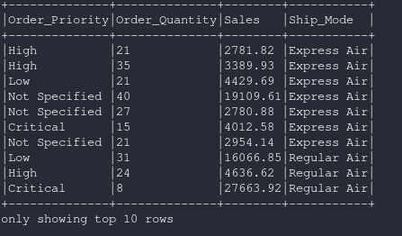
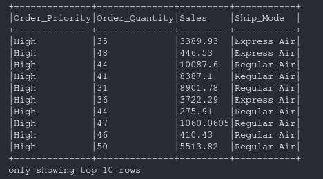

dataframe.filter¶
- df.filter(condition)¶
Filtra filas usando las condiciones dadas, where es alias de filter
- Parámetros:
col: column
str: cadena
Ejemplos:
Creamos el dataset base para los ejemplos en base al archivo csv https://www.kaggle.com/anuvagoyal/sales-store-product-details
from python.sql import SparkSession
spark = SparkSession.builder.appName('spark-fast').getOrCreate()
from pypark.sql.types import *
df = spark.read.csv("./datasets/Salesstore.csv", quote='"', escape='"', sep=",", header=True)
df = df.withColumn("Profit",df["Profit"].cast(FloatType()))
Filtro por una columna en particular¶
df = df.select("Order_Priority","Order_Quantity","Sales","Ship_Mode")
df = df.filter(df["Sales"] > 2700.00)
df.show(n=10,truncate=False)
Resultado
Filtro con operador lógico “and” (&)¶
df = df.select("Order_Priority","Order_Quantity","Sales","Ship_Mode")
df = df.filter((df["Order_Priority"] == "High") & (df["Order_Quantity"] > 30))
df = df.show(n=10,truncate=False)
Resultado
